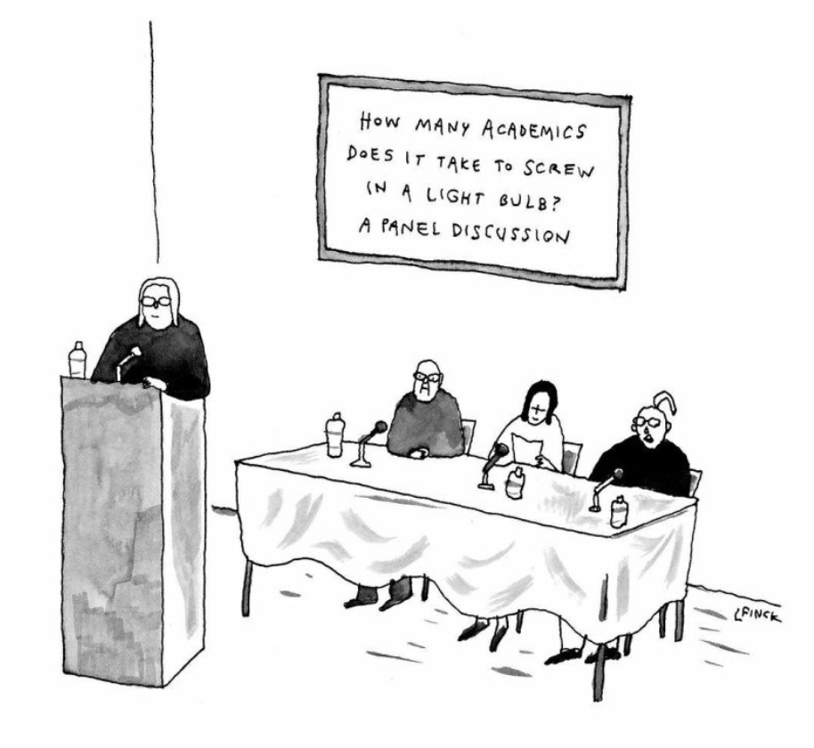

| Coordinates | Topic | Speaker(s) |
|---|---|---|
| 15 Oct MR12 | Supervising and being a PhD student | Jack |
| 22 Oct MR13 | Discussion | Jef |
| 29 Oct MR12 | No talk | |
| 5 Nov MR5 2pm | The journal system | Various editors |
| 12 Nov MR12 | Teaching and learning | TBD |
| 19 Nov MR12 | Discussion | TBD |
| 26 Nov MR12 | Doing research | TBD |
| 3 Dec MR12 | Discussion | TBD |
I strongly recommend looking at [Proofs and Prompts] for a sample of essays and opinions from the community. Note also their `Newsfeed' tab, which gives notes personal blogs, influential AI essays, and current events related to AIxMath.
Some additional resources related to PhD supervision and training, recommended by Jack:
